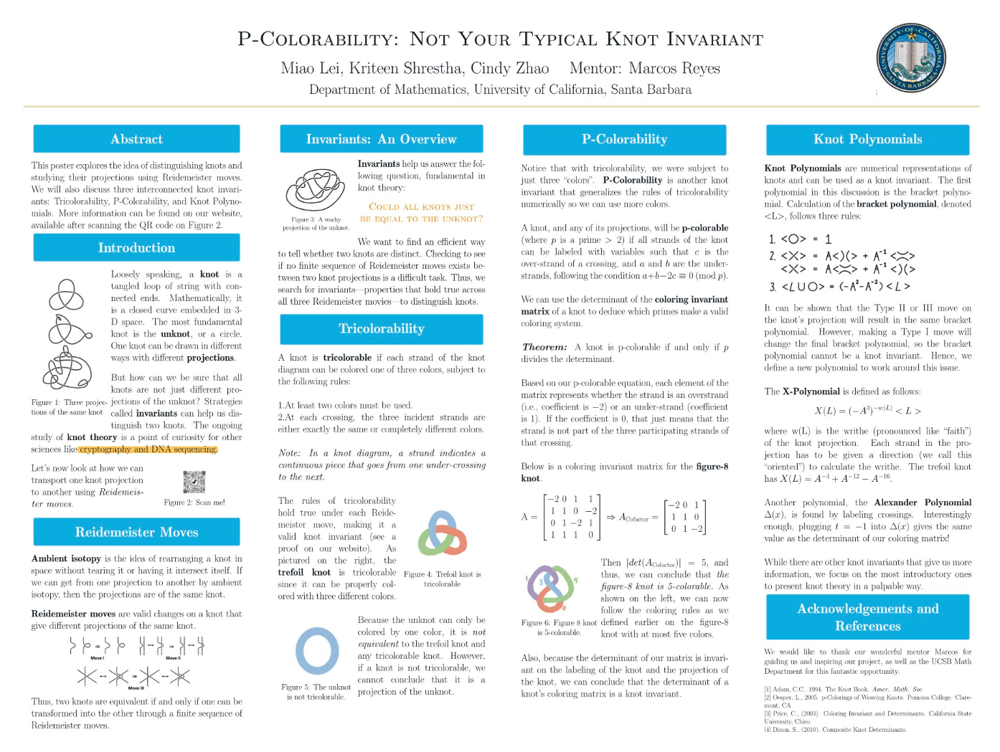
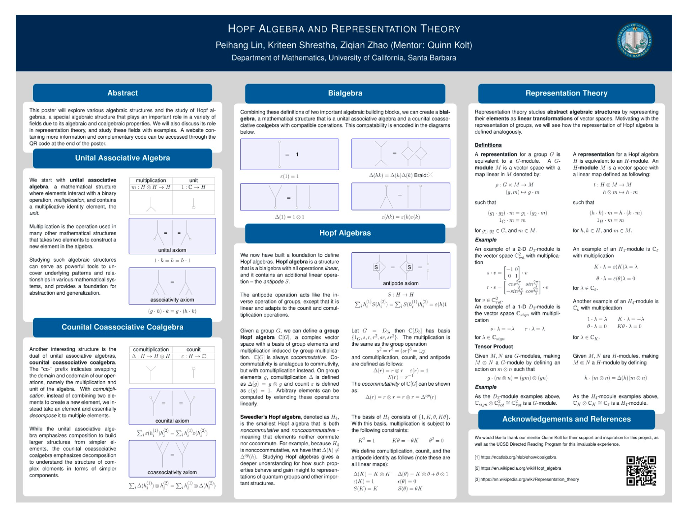

Knot Theory

In 2022-2023, I worked on research on knot theory, invariants, various forms of colorability, and knot polynomials, through the UCSB Directed Reading Program, under the supervision of Marcos Reyes, with Miao Lei and Cindy Zhao. Through this research, I was exposed to forms of topology and its abstract applications in so many diverse fields, like cryptography, DNA sequencing, physics, and much more. Using a concrete idea like colorability and invariance/distinguishability of knots turns out be so fundamental and analagous to various security schemes, such as error-detection in coding theory or the resilience of cryptographic systems.
Just as knot invariants can distinguish between topologically different knots, mathematical invariants in cryptography serve to differentiate secure from insecure structures. Similarly, the concept of colorability mirrors how information can be encoded under strict rules while still retaining consistency, a principle that underlies modern encryption, network security, and even biological processes like DNA folding. This realization deepened my appreciation for the unifying power of abstract mathematics in providing rigorous tools for analyzing complex systems across seemingly unrelated disciplines.
Here is a complementary website for our project we built using Notion: Knot Your Ordinary Invariant
Hopf Algebra

With a fresh enthusiasm with abstract mathematics, I continued the DRP program 2023–2024 under the supervision of Quinn Kolt, with Ziqian Zhao, Peihang Lin, researching Hopf algebras and algebraic ideas such as category theory and representation theory. During this year of research, I gained a deeper and more abstract understanding of algebraic structures, particularly how categorical concepts like duality, monoidal structures, and rigidity provide a unifying framework for understanding algebras, coalgebras, and their representations. This experience not only sharpened my ability to think abstractly but also helped me appreciate the interplay between algebraic and categorical perspectives, as well as the computational side of exploring these structures through tools like Mathematica.
I was especially fascinated by Hopf algebras, since they not only generalize group symmetries in an algebraic framework but also play a central role in the mathematics of quantum theory. In particular, Hopf algebras provide the algebraic foundation for quantum groups, which arise in quantum mechanics and quantum field theory as deformations of classical symmetry groups. This connection between abstract algebra and physics highlighted for me how purely mathematical structures can model quantum symmetries and encode non-commutative geometry. It was eye-opening to see such abstract ideas to play such important roles in such fundamental ideas like quantum mechanics, deepening my motivation to study the interplay between algebra and modern physics.
Here is a complementary website for our project we built using Notion: Hopf Algebras Representation Theory and More!